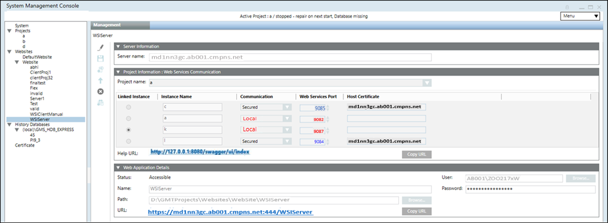

Create a Web Service Communication on Server
- In the SMC tree, under Websites, select the website.
- Select the Management tab.
- Click
 and select Create Web Services Application.
and select Create Web Services Application. - In the Project Information: Web Services Communication expander, from the Project name drop-down list, select a project to which you want to link the web services application.
- In the Web Application Details expander, do the following:
a. In the Name field, enter a unique name for the web services application.
b. In the Path field, browse to select a destination for the web services application. The default path is [installation drive:]\[installation folder]\[WebSites]\[Web site name].
c. In the User field, browse to select a user for the web services application using the Select User dialog box.
NOTE: The web services application user must be a member of the IIS_IUSRS group. If you select a user that is not a member of the IIS_IUSRS group, SMC prompts you to add it.
The user must also have Allow log on locally as Service right set. For more information, refer Cannot Create or Save Website in Troubleshooting Websites and Web Applications.
d. Enter the Password. - Click Save
 .
. - A confirmation message displays.
- Click OK.
- The data is validated on successful creation of web services application. The Help URL and Web Services Application URL will be displayed
